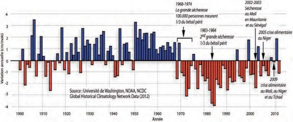
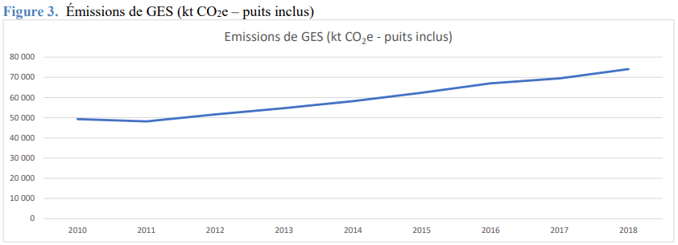

Mise a Jour de la Contribution Determinee Nationale (CDN)
AFAT : Agriculture, de la foresterie et des autres utilisations des terres AGIR : Alliance globale pour la résilience
AMCC : Alliance Mondiale Contre le Changement Climatique BAD : Banque Africaine de Développement
BaU : scenario de référence ou « business-as-usual » BET : Borkou-Tibesti-Ennedi
CC : Changement Climatique
CCNUCC : Convention Cadre des Nations-Unies sur les Changements Climatiques CDN : Contribution Déterminée au niveau Nationale
CEDEF : Convention pour l’Élimination de toutes les formes de Discrimination à l’Égard des Femmes
CH4 : Émissions de méthane
CILSS : Comité Inter-États de Lutte contre la Sécheresse au Sahel CNA : Cours normal des affaires
CNCC : Communication Nationale sur les changements climatiques CNS : Conférence Nationale Souveraine
COP : Conférence des Parties
CO2 : Dioxyde de carbone (gaz carbonique) CPDN : : Contribution prévue déterminée national
DEELCC : Direction de l’Éducation Environnementale et de la Lutte contre les Changements Climatiques
FAO : Organisation des Nations Unies pour l’Alimentation et l’Agriculture 11ème FED : Fonds Européen de Développement
FEM : Fonds pour l’Environnent Mondial
FEM-AFD : Projet de préservation du Lac Tchad : contribution à la stratégie de développement du Lac
FIDA : Fonds International de Développent Agricole FPMA : Fonds pour les pays les moins avancés
FVC : Fonds Vert pour le Climat
GACMO : Greenhouse Gas Abatement Cost Model GES : Gaz à Effet de Serre
Gg : Gigagramme
GHI : Index de la Faim dans le monde
GIEC : Groupe Inter-gouvernemental sur l’Évolution du Climat HCNE : Haut Comité National pour l’Environnement
IDH : Indice de développement humain
INSEED : Institut National de la Statistique, des Études Économiques et Démographiques LEAP : Logiciel de calcul des Gaz à effet de serre
MDP : Mécanisme de Développement Propre
MRV/MNV : Mesurage, Rapportage et Vérification/ Mesure, Notification et Vérification MW : Méga Watt
N2O : Oxyde nitreux
ODD : Objectifs de Développement Durable ONG : Organisations non gouvernementale
PACNSC : Plan d'Action pour la mise en œuvre du Cadre National pour les Services Climatiques du Tchad
PANA : Programme d’Action National d’Adaptation
PAN-LCD : Programme d’Action National de lutte contre la désertification PARSAT : Projet d’Amélioration de la Résilience des Systèmes Agricoles au Tchad PIB : Produit intérieur brut
PNA : Plan National d’Adaptation PND : Plan National de Développement
PNE : Politique Nationale de l’Environnement
PNISRT : Plan National d'Investissement du Secteur Rural du Tchad PNUE : Programme des Nations Unies pour l'environnement PNUD : Programme des Nations Unies pour le Développement
PRESAO : Prévisions Saisonnières en Afrique de l’Ouest au Cameroun et au Tchad PRG : Potentiel de Réchauffement Global
PRODEBALT : Programme de développement durable du bassin du lac Tchad
P2RS : Projet de Renforcement de la Résilience à l’Insécurité Alimentaire et Nutritionnelle au Sahel
PRRRPS : Programme régional pour le renforcement de la résilience des pays du Sahel PTF : Partenaires Techniques et Financiers
RCA : République Centre Africaine
REDD+ : Réduction des Émissions liées à la Déforestation et la Dégradation Forestière SBN : Solutions basées sur la nature
SDDER : Schéma Directeur pour le développement des Énergies Renouvelables au Tchad
SNLCC : Stratégie Nationale de Lutte contre les Changements Climatique au Tchad UE : Union Européenne
UA : Union Africaine
UNSD : Division de la statistique des Nations Unies
Conformément aux articles 4.1, 4.2 et 4.3 de l’Accord de Paris, aux paragraphes 23 et 24 de la décision 1/CP.21 et aux autres dispositions pertinentes de l’Accord, le Tchad présente la mise à jour de sa Contribution Déterminée au niveau National (CDN). Elle se décline en deux grands axes en vue de confirmer sa participation à l’ambition collective qui vise à maintenir l’augmentation de la température moyenne mondiale à moins de 2°C, idéalement à 1,5°C au-dessus des niveaux préindustriels, ainsi qu’à l’objectif global de renforcer les capacités d’adaptation, la résilience et réduire les vulnérabilités aux changements climatiques des populations.
Cette CDN combine la vision d'un Tchad émergent avec une voie de développement résiliente au climat et à faible émission de carbone, axée sur les secteurs de l'eau, de l'agriculture/agroforesterie, de l'élevage et de la pêche ainsi que axes transversaux (renforcement de capacités, technologies, prévisions de précipitation, gestion de risques, etc.). Il ressort de ce document stratégique que les ambitions du Tchad sont revues à la hausse et cela en attente des appuis des différents partenaires techniques et financiers dans les secteurs prioritaires tant pour l'atténuation que pour l'adaptation au changement climatique. Ce document stratégique est également aligné à la vision 2030 du Tchad sur l'objectif principal de son axe 4, qui est d'améliorer les conditions de vie de la population et de réduire les inégalités sociales tout en assurant la préservation des ressources naturelles et l'adaptation au changement climatique.
La présente CDN prévoit la réduction cumulée des émissions des GES d’ici à 2030 à 88 350 kt CO2eq (mesures inconditionnelles et conditionnelles) avec un objectif d’atténuation global de 19,3 % par rapport au scénario de référence. L’investissement nécessaire à la mise en œuvre des actions d’atténuation de la CDN est estimé à 6 700,2 M USD.
Ainsi, les besoins en financement pour répondre au niveau élevé des risques climatiques attendus au Tchad pourraient s’élever à plus de 375 millions d’USD dès 2021 (soit sur la base d’estimation de 3% du Produit intérieur brut) pour atteindre le coût annuel de 645 millions d’USD à l’horizon 2030. Sur cette base, les projections pour la période 2021-2030 pourraient s’élever à plus de 5 002 milliards d’USD. Sans négliger l’importance des sources de financement domestiques et privées, les apports financiers internationaux des Partenaires Techniques et Financiers devront jouer un rôle très significatif.
Les apports prioritaires internationaux pour l’adaptation sont estimés de l’ordre de 75 % des besoins en financement, et devraient s’élever à plus de 281 millions USD / an dès 2021 pour atteindre plus de 483 millions USD / an dès 2030. Il est à noter que le Programme Pays Fonds Vert Climat a un budget estimé de 2 280 milliards US$ pour onze (11) projets d’adaptation à l’horizon 2030, et que le programme n’adresse qu’une partie des secteurs prioritaires identifiée par cette CDN actualisée. Pour faciliter le renforcement la gouvernance climatique au sein du gouvernement du Tchad, la faisabilité de la mise en œuvre d'un Fonds Climatique Tchadien (FCT) est à explorer sur la base des expériences nationales et internationales qui pourrait être chargé de mobiliser des opportunités de financement pour la mise en œuvre des activités de la CDN et des autres activités en relation avec l’atténuation et l’adaptation aux changements climatiques à long terme.
Par ailleurs, la pandémie du Covid-19 a eu un impact économique important dans le pays et a contribué à retarder la mise en œuvre des actions d'atténuation et d'adaptation prévues. Cette pandémie a également amplifié les vulnérabilités des communautés rurales aux changements climatiques, en particulier celles des personnes les plus exposées et marginalisées dont les femmes.
Le Gouvernement du Tchad présente ici une actualisation de sa CDN de 2015 pour la période 2120- 2030, conformément aux articles 4.2 et 4.1 de l’Accord de Paris, aux paragraphes 23 et 24 de la décision 1/CP.21 et aux autres dispositions pertinentes de l’Accord.
Pour respecter ses engagements internationaux en matière du climat, le Tchad, par cette mise à jour sa CDN confirme sa participation à l’ambition collective qui vise à maintenir l’augmentation de la température moyenne mondiale à moins de 2°C, idéalement à 1,5°C au-dessus des niveaux préindustriels, ainsi qu’à l’objectif global de renforcer les capacités d’adaptation, de renforcer la résilience et réduire les vulnérabilités aux changements climatiques.
La CDN, les Communications Nationales aussi bien que le Plan National d’Adaptation (PNA) sont les principaux moyens de communication que le Gouvernement utilise pour informer la communauté internationale des actions qu'il entend mener pour faire face aux changements climatiques. La préparation du premier PNA a été réalisée conjointement et a contribué au processus de mise à jour de cette CDN.
La contribution en matière d'adaptation intègre les données collectées lors des consultations nationales et provinciales et les études d’analyse de la vulnérabilité́ aux changements climatiques dans les secteurs prioritaires sensibles qui ont identifié les principaux risques et impacts climatiques, les groupes vulnérables, les secteurs affectés et les propositions de mesures d'adaptation. Elle reflète également les co-bénéfices des interventions d'adaptation, ainsi que les potentielles synergies avec les conventions de Rio et objectifs de développement durable (ODD)/ Agenda 2030 du développement.
Cette CDN a été conçue pour intégrer l'égalité des genres dans sa planification, en soutenant l'inclusion de mesures d'adaptation et d'atténuation sensibles au genre qui ont été recommandées lors de consultations aux niveaux national et régional et qui contribueront à une action climatique plus efficace.
Elle s'appuie également sur l'analyse de la convergence des priorités du Fonds vert pour le climat (FVC) et du Tchad pour développer le programme pays en termes d'interventions dans les secteurs prioritaires tant pour l'atténuation que pour l'adaptation au changement climatique.
Les conclusions et recommandations de cette CDN reflètent les apports de toutes les parties prenantes concernées au niveau national et régional qui ont permis de faire le point sur les différents risques climatiques auxquels sont confrontées les communautés des différentes régions du pays lesquelles ont exprimé leurs préoccupations et ont fourni des options pour améliorer leur bien-être et leurs activités génératrices de revenus afin d'accroître leur résilience aux impacts du changement climatique.
Le Tchad est l’un des Pays les Moins Avancés (PMA) du monde. Environ ¾ de son territoire est désertique. Il est aussi reconnu comme étant l’un des pays le plus chaud et est compté parmi les pays les plus vulnérables face à la variabilité et aux changements climatiques. Cet état de fait est dû au fait que le Tchad est particulièrement touché par les faibles rendements et la baisse des récoltes, qui sont exacerbés par la faiblesse des prévisions, de la préparation, de la réponse et de l'adaptation.
Le pays a ratifié la Convention Cadre des Nations Unies sur les Changements Climatiques (CCNUCC) en 1993 et le protocole de Kyoto en 2009. Dans le cadre des engagements pris vis-à-vis de la CCNUCC, le pays a élaboré deux Communications Nationales sur les changements climatiques respectivement en 2001 et 2012, son Programme d’Action Nationale d’Adaptation (PANA) en 2010, et a soumis sa première CDN en 2015. A travers sa CDN, et la ratification de l’Accord de Paris sur le climat en 2016, le Tchad s’est engagé dans le cadre de la nouvelle dynamique de coopération internationale sur les changements climatiques, à contribuer à l’effort mondial de réduction des émissions de gaz à effet de serre et de renforcement de la résilience au changement climatique.
La première CDN de 2015 combinait la vision d'un Tchad émergent à l'horizon 2030 avec une voie de développement résiliente au climat et à faible émission de carbone, axée sur les secteurs de l'eau, de l'agriculture/agroforesterie, de l'élevage et de la pêche. La CDN indiquait également les principales priorités en matière d'adaptation, tant les priorités sectorielles (Eau, Agriculture, Élevage et Pêche) que transversales (renforcement de capacités, technologies, prévisions de précipitation, gestion de risques, etc.).
La CDN anticipait la mise en œuvre d'une dizaine de programmes dans le domaine de l'adaptation et d'une douzaine de programmes prioritaires dans le secteur de l'atténuation. Les possibilités estimées pour atteindre les objectifs de la CDN comprenaient : (i) Adaptation : 14,17 milliards USD au total sur la période d'engagement 2030, dont 11,38 milliards USD pour atteindre l'objectif conditionnel (avec les contributions de la communauté internationale), (ii) Atténuation : 7,063 milliards USD au total sur la période d'engagement, dont 6,54 milliards USD pour atteindre l'objectif conditionnel. Le coût total de la mise en œuvre de la CDN s'est élevé à 21,23 milliards USD, dont 17,92 milliards USD pour atteindre les objectifs conditionnels. A moyen et long terme, le Fonds vert pour le climat fournira une part substantielle du financement de la mise en œuvre de la CDN du Tchad.
A partir des études réalisées dans le cadre du Programme d´Action National d´Adaptation (PANA), la CDN de 2015 définissait les priorités d´adaptation transversales et sectorielles. La présente CDN vise à actualiser ces priorités. En matière d’adaptation, l’actualisation devait s´appuyer sur les travaux réalisés dans le cadre du processus PNA puisque ce dernier fournirait un mécanisme pour améliorer la capacité et l'appropriation en ce qui concerne la planification, la budgétisation, la mise en œuvre et le suivi de l'adaptation. Le processus PNA améliorera également les capacités individuelles et institutionnelles à fournir des services climatiques pour la planification de l'adaptation dans les secteurs prioritaires.
Conformément aux orientations de la politique du Gouvernement du Tchad en matière de développement, le Tchad aspire à devenir un pays émergent à l’horizon 2030. A cet égard, le Gouvernement entend, entre autres, renforcer la protection de l’environnement, l’atténuation des émissions de GES et l’adaptation aux effets des changements climatiques.
La Covid-19 a eu un impact économique important dans le pays et a contribué à retarder la mise en œuvre des actions d'atténuation et d'adaptation. Cette pandémie a également amplifié les vulnérabilités des communautés rurales aux changements climatiques, en particulier celles des personnes les plus exposées et marginalisées.
Selon les orientations de la politique du Gouvernement du Tchad susmentionnées, les engagements nationaux en matière de changements climatiques sont inscrits dans les documents de politique et de stratégie élaborées définissant les axes stratégiques devant guider l’action du gouvernement dans ce domaine.
Depuis la publication de la CDN, des politiques et stratégies importantes ont été adoptées pour soutenir les efforts du pays dans la lutte contre le changement climatique, telles que la « Vision 2030, le Tchad que nous voulons ». De cette Vision, découle le PND 2017- 2021 qui constitue un modèle d’intégration de la dimension “changements climatiques” dans une politique de développement. Le Plan national d'investissement pour le secteur rural du Tchad (2016 - 2022), la Stratégie nationale de lutte contre le changement climatique (2017), la Politique Nationale de l’Environnement (2017) en cours de validation, le Plan d'action pour la mise en œuvre du Cadre national des services climatiques au Tchad (2016-2020) et le Schéma Directeur pour le développement des Énergies Renouvelables au Tchad (2018) sont autant d’autres cadres pour la mise en œuvre de cette vision.
En outre, suite à l’adoption du nouveau cadre d’action à Sendai, un Plan d’Action National de Renforcement des Capacités pour la Réduction des Risques de Catastrophes, la Préparation et la Réponse aux Urgences (2015-2020) a été élaboré par le Ministère de l’Administration du Territoire et le Ministère de l’Économie et de la Planification du Développement avec l’appui technique du Programme des Nations Unies pour le Développement (PNUD). Il recommande d’établir une Stratégie nationale spécifique pour la préparation à la gestion des catastrophes qui clarifie les rôles et responsabilités des structures existantes en cas d’opération d’urgence
Le processus de la mise à jour de la CDN offrait ainsi une opportunité d'évaluer, d'ajuster et de renforcer les stratégies nationales et de les aligner sur les priorités nationales. Il s’agissait également d’une opportunité de mieux intégrer les questions climatiques dans la planification du développement national et de réévaluer les options d'atténuation et d'adaptation en vue des années 2020-2030 tout en renforçant la participation des parties prenantes.
En parallèle, le PNA avait été initié par le gouvernement du Tchad en octobre 2019 et couvrira à terme 19 provinces réparties dans les zones sahélienne et soudanienne. Cette initiative permettra de faire face aux risques liés aux changements climatiques à court, moyen et long-termes, d´établir des efforts de renforcement des politiques et de renforcement des capacités, d´intégrer les changements climatiques dans les processus de planification, de budgétisation du développement et de catalyser les investissements pour l'adaptation aux changements climatiques.
Le Ministère de l’Environnement, de la Pêche et du Développement Durable à travers la Direction de l’Éducation Environnementale et de la Lutte contre les Changements Climatiques, qui a la responsabilité de l'élaboration de la CDN, a organisé des consultations nationales et régionales pour préparer la CDN 2021, en utilisant des approches participatives et interactives avec les parties prenantes. Celles-ci comprennent différentes institutions publiques et privées, des régions, des chefs traditionnels et communautés locales, des services techniques des ministères sectoriels déconcentrés, de l'enseignement supérieur, des responsables d'organisations de la société civile, des représentants du secteur privé, des responsables d'organes de presse, des associations d'organisations de producteurs, des organisations de femmes, des jeunes et des autorités communales, des partenaires techniques et financiers.
L'objectif de ces consultations était d'informer et de consulter les parties prenantes sur les deux processus en cours liés aux changements climatiques. Ces consultations ont été conçues pour valider l'analyse de la situation des changement climatiques au Tchad, recueillir des informations supplémentaires, et discuter et convenir des priorités stratégiques pour l'adaptation et l'atténuation.
Les ateliers régionaux ont eu lieu dans la Province du Logone Occidental (Moundou), Logone Orientale (Doba), de la Tandjilé Est (Lai), du Mayo kebbi Est (Pala) et du Moyen-Chari (Sarh), la Province de Hadjer-Lamis (Massakory), du Kanem (Mao), du Bahr el Gazal (Moussoro) et du Lac (Bol), la Province du Guerra (Mongo), du Batha (Ati), de l’Ouaddaï (Abéché) et du Biltine (Biltine). Ces ateliers étaient très importants non seulement pour sensibiliser et faire participer les autorités et les communautés locales au processus, mais aussi pour recueillir des informations supplémentaires sur l'atténuation et l'adaptation auprès des parties prenantes dans les régions. Le processus a été complété par un atelier national de pré-validation, qui a permis aux parties prenantes nationales et régionales de valider et compléter les données utilisées dans les analyses et les actions prioritaires de la CDN en matière d’adaptation et atténuation.
Le développement de la CDN a aussi contribué à la formation et renforcement des capacités techniques en termes d'apprentissage de l'utilisation d'un outil de modélisation des trajectoires des GES (LEAP). Les scénarios de la CDN et impacts des mesures d’atténuation considérées ont été développés sur la base de l’inventaire national de GES mis à jour en 2021 sur la période 2010-2018 et de l’outil GACMO (Greenhouse Gas Abatement Cost Model).
L'actualisation de cette CDN a pris en considération les priorités définies dans le PANA, la première CDN, et les analyses de la vulnérabilité des secteurs sensibles au climat. En plus, une analyse a été effectuée sur la base des études, rapports, stratégies et plans nationaux, afin d'intégrer les informations les plus récentes en termes de risques climatiques et de vulnérabilités et principaux secteurs vulnérables. A ce titre, la stratégie nationale de lutte contre le changement climatique de 2017 est importante dans le contexte de la CDN révisée car elle élabore les principaux secteurs clés impactés par le changement climatique. Dans ce contexte, le programme pays du Fonds vert pour le climat Tchad 2019, est également important car il fournit des évaluations de la vulnérabilité et des impacts de la vulnérabilité par secteur.
Une analyse des études récentes sur le genre et le changement climatique et sur l'intégration du genre a été effectuée et a montré la faible compréhension du concept de genre par les différents acteurs et des liens avec les changements climatiques. Il est aussi important de noter le rôle des femmes dans la gestion écologique et les inégalités dans l'accès et le contrôle des ressources qui exacerbent leur vulnérabilité restent peu reconnus.
Cette actualisation a principalement bénéficié de l’appui de l’Initiative pour la Transparence de l’Action Climatique (ICAT), du PNUD (Projet FEM-PNA, Promesse Climat et Programme d’Appui Global au PNA, PAG-PNA), du Réseau Mondial sur le PNA (NAP Global Network) et l’Union Européenne, et de la coordination du NDC Partnership.
Toujours soucieux de contribuer à la lutte contre les changements climatiques en vertu de l’Accord de Paris, le Tchad reste fermement attaché à l’augmentation de ses ambitions comparativement à ses engagements antérieurs, ce qui s'est reflété dans la vision de cette CDN actualisée pour l'atténuation et l'adaptation et s’exprime en ces termes :
« Soutenir d’ici à 2030, une économie diversifiée et résiliente aux changements climatiques s’inscrivant dans une trajectoire de développement moins émettrice des Gaz à Effet de Serre pour le bien-être de la population Tchadienne, tout en protégeant des écosystèmes et une économie résiliente aux changements climatiques, capables d'anticiper, de gérer et de réduire les risques et phénomènes extrêmes environnementaux et climatiques, tout en réduisant les inégalités sociales et assurant la préservation des ressources naturelles.»
Cette vision est en conformité avec la Vision 2030 du Tchad ‘‘un pays émergent à revenu intermédiaire, porté par des sources de croissance et de valeur ajoutée diversifiées et durables‘‘. Il est également aligné sur l'objectif principal de son axe 4, qui est d'améliorer les conditions de vie de la population et de réduire les inégalités sociales tout en assurant la préservation des ressources naturelles et l'adaptation au changement climatique (Vision 2030).
Dans ce contexte, il est important d’orienter et de faire converger des initiatives politiques institutionnelles, techniques, scientifiques et financières pour faire face au changement climatique. Plus spécifiquement, promouvoir l'efficacité énergétique et les énergies renouvelables, notamment l'énergie solaire, éolienne et le biogaz, dans tous les secteurs. Encourager la gestion durable des terres et des forêts afin de réduire les émissions dues à la dégradation et à la déforestation. Ainsi qu'à intégrer la dynamique de genre tout au long du processus d'élaboration et de mise en œuvre des CDN.
Le Tchad, cinquième plus grand pays d'Afrique, est un pays enclavé d'Afrique centrale qui comprend la zone saharienne, sahélienne et soudanaise. Le relief est varié et contrasté. Il est constitué principalement d’une vaste cuvette bordée par des massifs montagneux.
Le domaine hydrographique reste dominé par les cours d’eau et les lacs dont les permanents sont le Chari et le Logone. Ces cours d’eau forment le système Chari-Logone avec une superficie de leur bassin versant de 600 000 km².1 Le Lac Tchad, fraction d’une vaste mer intérieure, constitue le plan d’eau libre le plus vaste du Tchad.
Le climat tropical du Tchad est réparti dans les grandes zones bioclimatiques, saharien au Nord, sahélien au Centre, Soudanien au Sud. En ce qui concerne la biodiversité, les principales formations végétales du Nord au Sud sont les suivantes : (i) steppes arbustives à épineux et herbacées annuelles ; (ii) steppes arborées et arbustives à épineux et non épineux et herbacées annuelles ; (iii) savanes arborées et arbustives à combrétacées avec herbacées annuelles et herbacées pérennes et (iv) savanes boisées et forêts claires dominant une strate herbacée vivace.
Le Tchad partage ses biomes avec ses pays voisins : (a) biomes désertiques du Sahara avec la Lybie, le Soudan et le Niger ; (b) biomes Sahéliens avec le Soudan, le Niger et le Nigéria ;(c) savanes sèches avec le Soudan, la République Centre Africaine (RCA), le Cameroun et le Nigéria et (d) savanes humides avec la RCA et le Cameroun.
La structure de l’économie du pays, qui reste très peu diversifiée, est fortement dominée par le secteur primaire (pétrole, agriculture, élevage et mines). Le secteur agricole qui se limite aux cultures vivrières, notamment les céréales, et des cultures de rente, notamment le coton, la canne à sucre et la gomme arabique, est très vulnérable aux aléas climatiques. Le secteur privé n'est constitué que de petites et moyennes entreprises opérant pour la plupart dans l'économie informelle.
Les effets de la vulnérabilité dans le secteur de l'agriculture, de la foresterie et de l'utilisation des terres se manifesteront par des réductions significatives des rendements et de la production (-10 à -25%) des cultures vivrières (mil, sorgho, maïs) en raison des déficits hydriques causés par des sécheresses successives, des températures élevées, des débuts tardifs de la saison des pluies et/ou des arrêts précoces. En outre, la vulnérabilité due à une faible irrigation, à la désertification et à la dégradation des terres et des forêts a des effets importants sur l'ensemble de la chaîne alimentaire de la population tchadienne.2
Les phénomènes météorologiques extrêmes tels que les sécheresses, les inondations et les vagues de chaleur, ont un impact sévère sur les ressources naturelles dont la population tchadienne, majoritairement rurale, tire ses moyens de subsistance.
Le Tchad abrite une population estimée à près de 15 millions d’habitants en 2018. Elle est composée de 50,6% de femmes, de 78,1% de ruraux et de 50,6% de jeunes de moins de 15 ans. Les femmes et les jeunes filles au Tchad ont un accès inégal aux ressources (éducation, foncier) dans un contexte général de contraintes socioculturelles : coutumes, normes et traditions pèsent sur les femmes et freinent l’application effective de leurs droits3. En outre, les femmes ne sont pas dans la même position que les hommes pour faire face aux impacts négatifs associés au changement climatique et n'ont pas les mêmes capacités et possibilités pour y faire face, ce qui fait qu'elles sont plus exposées ou vulnérables.4
L’évolution du climat du Tchad à l’instar d’autres pays de l’espace sahélien a connu au cours de ces dernières décennies des ruptures marquant des phases bien distinctes. Cette évolution se mesure par rapport au profil climatique qui mettra en exergue principaux aléas climatiques observés et futurs, les groupes et secteurs vulnérables, les impacts et les capacités d’adaptation qui sont les composantes de la vulnérabilité.
Avant les années 70, la région a traversé une succession d’années humides, puis a été sévèrement affecté par deux décennies de sécheresse (1970-80). À partir des années 1990, la pluviométrie s’est globalement améliorée mais elle est caractérisée par de fortes irrégularités (figure 1).
Figure 1. Indice de variation annuelle des précipitations au Sahel entre 1900 et 2010.

Source : Washington University , NOAA, NCDC. Global Historical Climatology National Data (2012)
Le climat du Tchad de type tropical sec situé entre les isohyètes 0 et 1 200 mm dans trois grandes zones bioclimatiques (figure 2) est fortement contrastées :
La zone saharienne ou désertique au nord qui couvre le septentrional constitué des provinces du Borkou-Tibesti-Ennedi (BET) et les parties nord des provinces du Kanem et du Batha, soit 47% du territoire national. Avec une pluviométrie inférieure à 100 mm/an, seuls l’agriculture oasienne et l’élevage camelin et de petits ruminants peuvent y être pratiqués. La saison qui dure de deux mois dans le Nord (quasi nulle à l’extrême Nord).
La zone sahélienne au centre du pays couvre 43% du territoire national. Avec une pluviométrie comprise entre 100 et 800 mm/an, elle présente d’importants contrastes entre la partie nord aride (climat saharo-sahélien avec des pluies annuelles comprises entre 100 et 200 mm) et la zone sahélo-soudanienne au sud caractérisé par une pluviométrie comprise entre 600 et 800 mm/an.
La zone soudanienne au sud du pays, comprise entre les isohyètes 800 et 1 200 mm, ne représente que 10% du territoire national. Elle concentre toutefois près de la moitié de la population tchadienne. Le climat de type tropical subhumide - la pluviométrie dans la zone soudano-guinéenne à l’extrême sud du pays est supérieure à 1 200 mm – permet la pratique d’une large variété de productions agricoles et l’élevage de nombreuses espèces (bovins, caprins, ovins, porcins, volaille).
Figure 2. Trois grandes zones bioclimatiques du Tchad

Source : PANA, Ministère de l’Environnement et de l’Eau, 2009.
Il est à constater qu’après des années humides de 1950 et 1960, la baisse des précipitations s’est amorcée vers la fin des années 1960, en phase avec ce qui a été observé dans le Sahel, et s’est intensifiée au cours des années 1970 et 1980 avant de connaître une légère rémission à partir des années 1990 et 2000. L’évolution de l’indice national de la pluviométrie montre une forte variabilité à partir de 1965 avec une tendance à la baisse avec des répercussions sur les systèmes naturels et humains.
La longueur de la saison agricole est également sujette à d’importantes variabilités interannuelles, avec une tendance marquée vers des saisons plus courtes. Une autre tendance est la fréquence accrue de périodes sèches prolongées en cours de saison des pluies
Au Tchad, l’évolution interannuelle de 1950 à 2019 de l’indice des températures montre une hausse continue de la température depuis le début des années 80 jusqu’à nos jours. A l’image du globe, les années 1990 et 2000 ont été les plus chaudes depuis le début des enregistrements météorologiques au Tchad. Les températures maximales ont augmenté en moyenne de 1,1 °C sur l’ensemble du pays. Les températures minimales auraient augmenté de 2°C sur la période 1951-2010 et les températures maximales de 1°C, avec des valeurs élevées entre 2002-2010 (Mbaiguedem, 2012).
Au Tchad, la recrudescence des phénomènes météorologiques extrêmes (sécheresses, inondations, vagues de chaleur, vents violents, etc.) est un des faits marquants des changements climatiques enregistrés au cours de ces dernières décennies au Tchad (PANA, 2010). Les épisodes de sécheresses des années 70, 80, ont causé de chute de production agricole et animale, de pertes en vies humaines et de la biodiversité, de dégradation du couvert végétal, migration de la population et du bétail et d’insécurité alimentaire (PANA, 2010).
La sécheresse qui a prévalu au cours de la campagne 2009/2010, a affecté près de 2 millions de personnes, avec une diminution de la récolte céréalière d’environ 31% par rapport à la moyenne quinquennale et de plus de 50 % dans la zone sahélienne (FAO, 2011).
Les impacts du climat sont importants sur les grands systèmes hydrographiques que sont les bassins du lac Tchad et du Niger, les systèmes naturels, agro-sylvo-pastoraux, halieutiques et humains. Ils impliquent des dysfonctionnements des saisons agricoles, des perturbations des cycles biologiques des cultures et une baisse des productions céréalières.
Les modèles climatiques montrent qu’il est très probable que les températures en Afrique augmenteront au cours du 21ème siècle de 3 à 4 °C en moyenne, soit 1,5 fois plus que la moyenne globale. Cette augmentation de température sera plus importante dans les régions continentales arides.5
Les résultats sur les projections des changements de précipitations et de température sur la base de 29 modelés globaux de l’expérience CMIP6 à l’horizon 2030 par rapport au scenario le plus optimiste (RCP4.5 ou profil représentatif d’évolution des concentrations de gaz à effet de serre) et le scénario pessimiste ou RCP8.5, indiquent une hausse significative des températures de surface relativement à la période 1981 à 2010. Selon ces RCP, la température moyenne au Tchad augmenterait en moyenne de + 1 °C pour le scénario optimiste notamment dans partie Nord du Sahel et toute la zone saharienne. Pour le RCP8.5 (scénario pessimiste), cette hausse avoisinerait + 1,5 °C à l’horizon 2030 dans l’extrême Nord du pays. Concernant les précipitations, les projections indiquent des hausses généralisées sur l’ensemble du pays. Cette hausse qui varie de 10 à 20 % sera plus importante dans les parties septentrionales du Tchad.6
A la station de N’Djamena, l’évolution temporelle des températures de 1950 à 2100 relativement par rapport à la référence climatologique de 1981-2010 montre un accroissement des températures autour de + 1 °C en 2030 et à + 2 °C en 2100.7
Toutefois, ces projections climatiques, en particulier celle relatives aux précipitations, présentent de nombreuses incertitudes (AGRHYMET, 2015). Entre facteurs globaux, dynamiques régionales et continentales, le climat de l’Afrique sahélienne est soumis à de fortes incertitudes.8
Au regard de la politique du Gouvernement en matière de développement, le Tchad qui aspire à devenir un pays émergent à l’horizon 2030 entend, entre autres, renforcer la protection de l’environnement, l’adaptation aux effets des changements climatiques et réduire considérablement les émissions de gaz à effet de serre. Cependant, compte tenu de la forte exposition du pays aux effets des changements climatiques, la République du Tchad a ratifié plusieurs accords internationaux sur les changements climatiques et a développé aussi plusieurs politiques, stratégies et initiatives visant à lutter efficacement contre les effets néfastes des changements climatiques.
La protection de l’environnement est inscrite dans la Constitution tchadienne (Articles 47 et 52 et Loi N°014/PR/1998. La politique nationale en matière du climat est confiée au Ministère en charge de l’environnement - dont la dénomination est à l’heure actuelle Ministère de l’Environnement, de la Pêche et du Développement Durable - à travers la Direction de l’Éducation Environnementale et de la Lutte Contre les Changements climatiques (DEELCC).
Le Gouvernement Tchadien, en signant et ratifiant respectivement en 1992 et 1993 la Convention-Cadre des Nations Unies sur les Changements Climatiques (CCNUCC) et en ratifiant son Protocole de Kyoto en 2009 et l’Accord de Paris sur le climat en 2015, s’est engagé à apporter les changements à moyen et long termes nécessaires pour atténuer les émissions de Gaz à Effet de Serre (GES) et à s’adapter aux effets néfastes de ces changements climatiques à travers le développement des stratégies plus résilientes et adaptées. Dans ce cadre et conformément aux engagements, le Tchad a élaboré et mis en œuvre des politiques, stratégies et plans qui abordent les impacts du changement climatique :
La 1ère Communication Nationale sur les changements climatiques en 2001 et la 2ème en 20129 ;
Programme d’Action National de lutte contre la désertification (PAN-LCD) adopté en 2000 dont les quatre objectifs prioritaires sont : le développement durable des filières, la sauvegarde des écosystèmes menacés, la lutte contre la désertification et la gestion des risques ;
Programme d’Action National pour l’Adaptation (PANA) présenté en 2009 ;
Contribution Prévue Déterminée au niveau National (CPDN) devenue CDN après l’entrée en vigueur de la ratification de l’Accord de Paris le 12 janvier 2017 ;
Plan National d'Investissement du Secteur Rural du Tchad (2016 - 2022) ;
Plan d'Action pour la mise en œuvre du Cadre National pour les Services Climatiques du Tchad (2016-2020) ;
Plan National de Développement (PND 2017-2021) ;
Stratégie Nationale de Lutte contre les Changements Climatique (SNLCC) au Tchad e 2017 ;
Politique Nationale de l’Environnement (PNE), 2017 en cours de validation ;
Vision 2030, le Tchad que nous voulons (2017) ;
Le Plan National d'Adaptation est en cours d'élaboration ;
Mise à jour de la CDN.
La CDN actualisée du Tchad se base sur des éléments mis à jour, notamment un inventaire des émissions de GES couvrant la période 2010 à 2018, année choisie comme année de référence. L’objectif fixé dans le scénario conditionnel est de réduire les émissions de GES de 19,3%, en 2030, par rapport à un scénario de référence. Cet objectif conditionnel, le Tchad entend le réaliser tout en poursuivant les efforts de développement et en valorisant de manière durable ses ressources disponibles.
La CDN couvre les émissions de GES du territoire national pour les secteurs de l’énergie, l’agriculture, la forêt et l’affectation des terres ainsi que des déchets. Les émissions liées au procédés industriels n’ont pas été comptabilisées faute de données. Néanmoins, elles sont considérées comme faibles étant donné qu’aucun procédé émetteur n’a été recensé omis pour les usages non énergétiques de combustibles et les appareils de froid.
La révision de la CDN du Tchad a permis de revoir l’inventaire des émissions de GES sur la série temporelle 2010-2018 en appliquant les dernières lignes directrices du GIEC sur la base des statistiques disponibles. Les émissions de nouveaux secteurs, telles que les émissions fugitives, les émissions de CH4 et N2O liées à la combustion du bois, les émissions du traitement des eaux usées, etc. ont été incluses.
Les GES couverts sont le CO2, le CH4 et le N2O. Les PRG appliqués sont ceux de l’AR4 du GIEC. Les lignes directrices 2006 du GIEC sont appliquées à l’ensemble des secteurs couverts.
L’inventaire des émissions de GES mis à jour porte sur la période 2010 à 2018 et couvre les secteurs de :
L’énergie : production d’électricité, industrie, transport, habitat, émissions fugitives liées à l’extraction de pétrole et de gaz et à la production de charbon de bois,
L’agriculture,
L’utilisation des terres, changement d'affectation des terres et foresterie,
Le traitement des déchets solides et liquides.

Figure 3. Émissions de GES (kt CO2e – puits inclus)
Selon les résultats d’inventaire, les émissions de GES incluant les puits ont augmenté de 49 320 kt CO2eq à 74 090 kt CO2eq entre 2010 et 2018 soit une augmentation de 50%.

Figure 4. Part des émissions (hors UTCATF) en 2018
L’agriculture est le principal secteur émetteur de GES au Tchad et représente environ 95% des émissions de GES.
Selon ce scénario de référence, les émissions de GES augmenteraient de 74 090 à 84 960 kt CO2e entre 2018 et 2030. Cette projection a été élaborée à l’aide de l’outil GACMO en prenant en compte les secteurs suivants :
Tableau 1 Émissions de GES (kt CO2eq) selon le scénario de référence sur la période 2018-2030
|
kt CO2eq |
2018 |
2020 |
2025 |
2030 |
||||
|
Energie |
2 834 |
2 988 |
3 605 |
4 299 |
||||
|
Procédés industriels |
NE |
NE |
NE |
NE |
||||
|
Agriculture |
71 019 |
72 444 |
76 140 |
80 024 |
||||
|
UTCATF |
-641 |
-654 |
-687 |
-722 |
||||
|
Déchets |
878 |
954 |
1 157 |
1 360 |
||||
|
TOTAL |
74 090 |
75 733 |
80 214 |
84 960 |
||||
Le secteur de l’énergie
Le secteur de l’énergie porte sur les secteurs de la production et transformation d’énergie ainsi que sur les usages dans les différents secteurs. Les bilans énergétiques de la division des statistiques des Nations Unies (UNSD) qui sont cohérents sur la période 2010 à 2018 ont été utilisés afin d’estimer les émissions de GES de ce secteur. Pour la consommation de biomasse, seules les émissions de CH4 et de N2O sont considérées dans ce secteur, conformément aux lignes directrices du GIEC. En effet, les émissions de CO2 liées à la consommation de biomasse sont comptabilisées dans le secteur UTCATF.
L’économie tchadienne est largement dépendante de la production de pétrole (20 % du PIB et plus de 80 % des exportations de biens en 2019) qui a débuté en 2003 et a permis au pays de connaître une période de croissance rapide jusqu’en 2014 (taux de croissance annuel moyen de 13,7 %). Les émissions fugitives liées à l’extraction de pétrole sont estimées et représentent environ 30% des émissions de l’énergie en 2018. Cette industrie étant récente et moderne, les facteurs d’émission des pays développés ont été appliqués. D’autre part, des émissions fugitives liées à la production de charbon de bois sont également estimées sur la base du raffinement 2019 des lignes directrices du GIEC et représentent 18% des émissions de l’énergie.
Pour la production d’électricité, le taux d’accès à l’électricité était de l’ordre de 11% en 2020, concentré essentiellement à N’Djamena et dans certaines zones urbaines. Selon le Plan d’urgence d’accès à l’électricité 2021-2023, l’objectif à l’horizon 2030 est d’atteindre un taux d’accès à l’électricité de 53% sur l’ensemble du territoire. L’activité et les émissions associées liées à la production d’électricité augmentent donc rapidement dans le scénario de référence.
Dans la consommation finale, le secteur des transports est le principal secteur consommant des produits pétroliers.
Les secteur résidentiel/tertiaires consomment essentiellement du bois et du charbon de bois.
L’industrie manufacturière est peu développée et consomme essentiellement de la biomasse et de l’électricité.
Faute de projections officielles, des taux de croissance annuels entre 4 et 6% sont appliqués selon les secteurs, sur la base des évolutions estimées du PIB et de la population sur la période. Pour la production d’électricité, les taux de croissance suivent les objectifs de raccordement d’électricité de la population.
Les procédés industriels
L’industrie manufacturière occupe une place marginale et repose essentiellement sur la production de bière et boissons gazeuses, la production de sucre, et l’égrenage du coton.
Seules les émissions liées aux consommations énergétiques sont comptabilisées pour ce secteur. Les émissions liées aux usages non énergétiques de combustibles et aux fuites de gaz fluorés ne sont pas estimées et sont considérées comme négligeables.
L’agriculture
Les émissions de GES du Tchad dans le secteur agriculture sont principalement liées aux activités d’élevage (79% des émissions du secteur dont 50% dus à la fermentation entérique et 29% aux déjections) et du brulage des savanes (13%). Elles proviennent également des activités de riziculture (2%), de l’usage d’engrais et du brulage des résidus agricoles (3%).
Les émissions dues à l’élevage ont été estimées à partir des statistiques fournies par le Bureau Central de Recensement Général de l'Elevage disponibles sur la période 2010 à 2020 avec une méthode de niveau 1 et les facteurs d’émission par défaut du GIEC.
Les émissions liées à la production agricole (riziculture, brulage des résidus de récolte et les émissions directes et indirectes de N2O des sols cultivés) ont aussi été estimées avec les données de surfaces, de productions et de consommations d’engrais fournies par les services statistiques du Tchad. Les hypothèses sur le brûlage des résidus sur le coton et les céréales ont été inspirées par des références sur les pratiques au Mali, la riziculture a été supposée de type pluvial avec une durée de croissance de 183 jours de mai à octobre. Les émissions sont ensuite calculées en appliquant les méthodes de niveau 1 des lignes directrices 2006 du GIEC. Quant aux émissions de GES liées au brûlage des savanes, les données de surfaces et de biomasse brulées sont directement récupérées sur le site de la FAO auxquelles les méthodologies des lignes directrices 2006 ont été appliquées.
La Forêt et l’Affectation des Terres
Le Tchad est subdivisé en deux zones bien distinctes : la zone désertique au nord avec une couverture végétale presque inexistante et la zone soudano-sahélienne qui dispose d’une couverture végétale d’environ 128 400 000 ha.
Les émissions/absorptions liées au secteur de l’Utilisation des terres, changement d’affectation des terres et Foresterie (UTCATF) ont été estimées sur la base des lignes directrices du GIEC 2006. Les changements d’occupation des terres ont été estimés à partir des cartes produites par le centre U.S. Geological Survey Earth Resources Observation and Science (USGS EROS) qui présente une évolution des terres sur la période 1975-2015. La caractérisation des différents types d’affectation des terres (forêts, savanes, etc.) en termes de productivité est basée sur la base des données recueillies de la base de Données de l’Occupation du Sol (BDOCS) de P-SIDRAT. Les estimations sur la consommation de bois sont également issues des travaux réalisés dans le cadre du programme SIDRAT.
Le puits du secteur UTCATF estimé à – 5 144 kt CO2eq en 2010 s’est réduit jusqu’à – 641 kt CO2eq en 2018 du fait d’un fort taux de déboisement et de déforestation.
Les Déchets
Les quantités de déchets produites en 2030 sont estimées sur la base d’une moyenne historique par habitant d’environ 88 kg/habitant/an (données Banque Mondiale). Ce taux de production de déchets est considérée stable jusqu’à 2030.
Le scénario de référence prévoit le prolongement des mêmes pratiques de gestion des déchets observées actuellement : environ 86% des quantités de déchets vont en décharges ouvertes considérées comme des décharges non gérées peu profondes et le reste est traité par feux ouvert.
Dans ces conditions, les émissions associées au traitement des déchets solides, calculées en appliquant les lignes directrices 2006 du GIEC, augmenteraient de 326 kt CO2eq en 2018 à environ 546 kt CO2eq en 2030, soit une progression moyenne de 5% par an sur la période.
Pour les eaux usées, les quantités de DBO (demande biochimique en oxygène) produite sont estimées à presque 293 kt par an en 2030 comparées à près de 222 kt en 2020. Le prolongement des pratiques de gestion actuelles conduit à des émissions de GES de 814 kt CO2eq en 2030 contre 552 kt CO2eq en 2018.
Les émissions cumulées des trois sous-secteurs (feux ouverts, stockage et traitement des eaux) sont ainsi estimées à environ 1 360 kt CO2eq en 2030 contre 878 kt CO2eq en 2018, soit une augmentation annuelle moyenne de 4,3% par an.
Le Tchad présente des objectifs d’atténuation en termes de réduction par rapport au scénario de référence, à l’horizon 2030. L’impact des actions considérées, en termes de réduction des émissions de GES, est estimé à partir de l’outil GACMO. Les actions couvrent essentiellement les secteurs de la production d’électricité, de l’industrie, du résidentiel, de la pêche et de la foresterie.
Deux scénarios sont considérés pour les projections d’émissions : un scénario inconditionnel (où seules les actions financées au niveau national sont mises en œuvre) et un scénario conditionnel (avec des actions d’atténuation supplémentaires couvertes par des appuis internationaux).
Le scénario inconditionnel entraine une réduction minime de 0,5% en 2030 par rapport au scénario de référence.
La plupart des actions ont été comptabilisées dans le scénario conditionnel qui permet quant à lui d’atteindre une réduction de 19,3% des émissions de GES par rapport au scénario de référence, en 2030 soit 16 372 kt CO2eq d’émissions évitées en 2030 et 88 350 kt CO2eq d’émissions évitées de manière cumulée entre 2018 et 2030. Ce scénario est très ambitieux étant donné que la baisse des émissions repose uniquement sur les secteurs de l’énergie (production d’électricité et efficacité énergétique), sur l’augmentation du puits de carbone et très légèrement sur le secteur des déchets.

Figure 5. Émissions de GES du Tchad selon les scenarios inconditionnel et conditionnel du Tchad sur la période 2010-20130
Tableau 2 Émissions de GES (kt CO2eq) et impacts des différents scénarios sur la période 2018-2030
|
kt CO2eq |
Scénario de référence |
Inconditionnel |
Conditionnel |
|||||
|
2018 |
2030 |
2030 |
2030 |
|||||
|
Energie |
2 834 |
4 299 |
3 909 |
2 320 |
||||
|
Procédés industriels |
NE |
NE |
NE |
NE |
||||
|
Agriculture |
71 019 |
80 024 |
80 024 |
80 011 |
||||
|
UTCATF |
-641 |
-722 |
-722 |
-15 049 |
||||
|
Déchets |
878 |
1 360 |
1 360 |
1 305 |
||||
|
TOTAL |
74 090 |
84 960 |
84 571 |
68 588 |
||||
|
% de réduction |
0,5 |
19,3 |
||||||
Les actions considérées sont décrites ci-dessous :
Le secteur de l’énergie
Les projets considérés d’ici 2030 dans les scénarios sont pour le secteur de la production d’électricité :
Scénario inconditionnel :
La construction d’une centrale à turbine fonctionnant au gaz de 210 MW implantée à N’Gouri dans la Province des Lac ;
La prise en compte de 2,2 MW d’éoliennes ;
La mise en place de fours de séchage améliorés pour le secteur de la pêche (150 fours de type chokor et 200 claies de séchage améliorées) permettant des gains de 30 à 40% de la consommation de bois par rapport à un four traditionnel pour le fumage du poisson.
Scénario conditionnel (actions supplémentaires) :
La construction de deux centrales (2x15 MW chacune) alimentées à la biomasse à Moundou et Sarh ;
Le mise en œuvre du projet d’interconnexion du réseau électrique entre le Tchad et le Cameroun qui permettrait d’utiliser l’énergie d’origine hydraulique (40 MW) ;
La construction de plusieurs centrales photovoltaïques de grande envergure pour un total de 240 MW à très court terme (2025) et de 400 MW à l’horizon 2030 ;
La construction de centrales hybrides solaire-diesel pour un total de 60 MW (plusieurs projets sont à l’étude à Sarh, Moundou et Pala) ;
La construction d’une centrale solaire avec stockage d’une capacité de 65 MW dans la ville de N’Djamena ;
La construction de centrales éoliennes, pour un total de 100 MW, à Bol, Mao, Amdjarass, Faya, Biltine, Fada, Guéréfa, Iriba, Kalaite et Arada ;
L’extension de l’usage des fours et claies de séchage améliorés pour le secteur de la pêche (1500 fours de type chokor et 2000 claies de séchage améliorées) permettant la réduction de la consommation de bois pour cette activité.
En termes d’efficacité énergétiques les actions sont :
La distribution de 3 000 000 lampes LED à basse consommation d’énergie auprès des foyers ainsi que 100 000 ampoules LED de bureaux ;
Un plan ambitieux de distribution de 3 000 0000 foyers améliorés au bois et 1 500 000 au charbon de bois ;
La production efficace de 300 000 tonnes de charbon de bois permettant d’améliorer le rendement de production et donc de réduire les consommations de bois et les émissions de CH4.
Enfin, l’évitement de CH4 via la mise en place de 10 000 digesteurs dans les fermes permettant de réduire les consommations de combustible fossile est considéré dans le scénario conditionnel.
La mise en place de ces actions d’ici 2030 permettra d’éviter l’émission de 6 900 kt CO2eq par rapport au scénario de référence dont 1 979 kt CO2eq sont comptabilisées dans le secteur de l’énergie, 4 909 kt CO2eq sont comptabilisés en foresterie (du fait de la baisse de la consommation de bois dans le résidentiel et dans l’industrie) et enfin 12 kt CO2eq avec l’évitement d’émissions de CH4.
Cet engagement pourrait être renforcé à l’avenir par la mise en place d’actions d’atténuation dans le secteur du transport notamment via la construction de lignes de chemin de fer, le développement des transports en commun dans les villes et l’amélioration de l’efficacité énergétique du parc roulant, notamment via l’interdiction d’importation des véhicules trop anciens. Ce secteur n’a pas été considéré dans les actions, faute de données précises sur le parc roulant et les consommations au niveau national. Un inventaire plus précis de ce secteur devrait être réalisés afin de pouvoir évaluer les actions à mettre en œuvre ainsi que leur impact en termes d’atténuation.
L’agriculture
L’agriculture est le secteur le plus émetteur au Tchad. Néanmoins, aucune action prévue (hormis la mise en place de digesteurs dans les fermes, comptabilisée en énergie) ne vise directement une réduction des émissions agricoles, les principaux objectifs étant liés à la sécurité alimentaire du pays et au développement de la productivité agricole.
La priorité pour ce secteur devra donc porter sur l’affinement des données d’activité et des pratiques qui permettront d’affiner l’inventaire des émissions de GES et ainsi pouvoir établir un plan d’actions détaillés selon les priorités définies au niveau national.
La Forêt et l’Affectation des Terres
Des actions de reboisement et de reforestation sont en cours ou/prévues pour améliorer le puits du carbone d’ici 2030. Dans le cadre du Défi de Bonn, le Tchad s’est engagé à reboiser un total de 5 millions d’hectares d’ici 2030, notamment des savanes arbustives dans la zone sahélienne (3,5 Mha) et arborée dans la zone soudanaise (1,5 Mha). Des actions de protection permettant d’éviter la déforestation (877 000 ha) et de restauration sont aussi prévues (50 000 ha) dans le plan d’actions à l’horizon 2030.
L’impact de ces actions est estimé à des absorptions supplémentaires de 9 400 kt CO2eq en 2030 auxquelles s’ajoutent 4 909 kt CO2eq d’émissions évitées liées aux actions d’efficacité énergétique.
Les Déchets
La mise en place d’une politique nationale de gestion des déchets est cruciale en termes de santé publique et de développement du pays. Le scénario conditionnel prend en compte la mise en place d’usines de traitement des déchets dans les grands centres urbains avec un impact de réduction estimé à environ 10% des émissions liées à la gestion des déchets solides. La priorité est encore d’améliorer la connaissance du secteur et de mettre en place des actions efficaces de collecte et traitement des déchets tels que la valorisation du méthane généré dans des décharges gérées. Le traitement de eaux usées (notamment en zone urbaine) et la mise en place du compostage des déchets sont aussi à étudier.
L’adaptation est un élément primordial dans la CDN du Tchad, vu sa vulnérabilité extrême aux changement climatiques, résultant de la combinaison d'une grande pauvreté de la majorité de la population, de risques élevés de sécheresse et d'inondations qui s’ajoutent à de conflits fréquents. Le Tchad est considéré par la communauté scientifique internationale comme l’un des « hotspot » du changement climatique dans le monde. En effet, Le Tchad a été classifié comme le pays le plus en péril, parmi les 186 pays évalués, dans le cadre d'une étude sur la vulnérabilité climatique. 10
Conscient de ces défis, le Gouvernement du Tchad a clairement mis l’accent sur la nécessité de l’adaptation dans sa première CDN qui a défini plusieurs secteurs et mesures prioritaires. Depuis, le gouvernement du Tchad a élaboré un nombre de stratégies et plans d’actions qui renforces les actions visant à asseoir une économie et une société plus résiliente aux changements climatiques. Celles-ci incluent, « la Vision 2030, le Tchad que nous voulons » et le Plan National de Développement 2017 – 2021, la Stratégie Nationale de Lutte contre les Changements Climatiques et la Politique Nationale de l’Environnement (2017).
Les secteurs prioritaires d’intervention et les groupes vulnérables aux changements climatiques décrits dans la première CDN réalisées par le PANA ont été repris et légèrement mis à jour lors de la deuxième communication nationale et du Programme Pays Fonds Vert Climat. Il est à noter que le Tchad ne dispose pas d’études complètes et détaillées de vulnérabilités de la population et des secteurs socio- économiques. Cette tache a été identifiée comme priorité dans le projet PNUD financé par le Fonds pour l’Environnement Mondial (FEM) « Plan National d’Adaptation du Tchad (PNA) »
La mise à jour de cette CDN, en termes d’actions pour l’adaptation, s’est déroulée en parallèle et en étroite collaboration avec l’élaboration du premier PNA. Ceci a permis de faire des consultations a échelle nationale et régionale et de mettre à jour la liste des principaux aléas climatiques, secteurs vulnérables et priorités stratégiques en matière d’adaptation, en tenant compte comme point de départ les priorités définies dans le PANA, la première CDN, la stratégie nationale de lutte contre les changements climatiques et le programme pays FVC, qui sont résumées dans le tableau ci-dessous.
Tableau 3 Priorités définies dans le PANA, la première CDN, la SNLCC et le programme pays FVC
|
PANA-2009 |
CDN - 2015 |
Stratégie Nationale de Lutte contre les CC - 2017 |
Programme Pays Fonds Vert Climat - 2019 |
|
Eau |
Eau |
Systèmes de production agro-sylvo-pastoraux et halieutiques |
Améliorer la résilience des systèmes de production agricoles et des systèmes urbains |
|
Production agricole |
Agriculture |
||
|
Pâturage |
Élevage |
||
|
- |
Pêche |
- |
|
|
Gestion de Risques |
Gestion de Risques |
Gestion de risques de phénomènes extrêmes |
Prévenir les risques et gérer des phénomènes climatiques extrêmes |
L'importance de l'adaptation au changement climatique dans les politiques nationales et sectorielles se manifeste par l'intégration dans les plans et stratégies nationaux des aspects liés à gestion durable des ressources naturelles, la coordination et la convergence efficaces des initiatives en matière de changement climatique, l'intégration de l'adaptation dans la planification nationale et dans les politiques et stratégies aux niveaux central, régional et local. Ainsi que l’application effective de services et d’informations météorologiques et climatologiques pertinentes et facilement compréhensibles.
Selon les consultations nationales et provinciales entreprises lors de l'élaboration de la CDN 2021 et les études PNA-FEM, les principaux aléas, et impacts climatiques au Tchad sont les suivants :
Tableau 4 Principaux aléas, et impacts climatiques au Tchad
|
Principaux aléas climatiques |
Secteurs Prioritaires |
Facteurs aggravants la vulnérabilité |
Principaux impacts |
|
|
|
|
|
|
|
|
|
|
|
|
|
|
|
|
Il est à noter que ces aléas et impacts ont des importances et priorités différentes selon les zones bioclimatiques du Tchad.
Tableau 5 Zones bioclimatiques du Tchad, aléas et secteurs prioritaires
|
Zone bioclimatique |
Aléas importants |
Secteurs prioritaires |
|
|
Saharienne |
|
|
|
|
Sahélienne |
|
|
|
|
Soudanienne |
|
|
|
|
Secteur |
Scénario inconditionnel (MUSD 2020) |
Scénario conditionnel (MUSD 2020) |
TOTAL (MUSD 2020) |
|
Energie |
|||
|
Centrales électrique |
296,9 |
1 613,6 |
1 910,5 |
|
Réseau électrique |
111,2 |
956,9 |
1 068,1 |
|
Efficacité énergétique |
0,1 |
111,8 |
111,9 |
|
Agriculture - Digesteur |
- |
2,5 |
2,5 |
|
Foresterie |
- |
3 556,2 |
3 556,2 |
|
Déchets |
6,6 |
44,4 |
51,0 |
|
TOTAL |
414,8 |
6 285,4 |
6 700,2 |
La mise en œuvre des actions couvertes par le scénario conditionnel nécessite l’appui financier international à hauteur de 6,285,385,669 USD soit 94% des investissements nécessaires à l’atteinte de l’objectif national.
Le bilan des réalisations de la 1ere CDN révèle que les financements de l'adaptation engagés durant la période 2016-2020 sont insuffisants par rapport aux besoins. La CDN révisée a aussi considéré un nombre plus important de secteurs et mesures prioritaires.
Compte tenu du manque d'études et de données quantifiées pour déterminer les impacts socio- économiques du changement climatique sur les différents secteurs au Tchad, il était difficile d'estimer le coût des interventions d'adaptation. Ainsi, les besoins de financement de cette CDN ont été estimés en fourchette.
Le montant minimum correspond est estimé suivant une approche “top-down” qui estime les besoins d’adaptation à un pourcentage du PIB. Celle-ci se base sur des simulations globales des besoins en adaptation développées par le PNUE (approche top down tirée de l’Adaptation Gap Report), ainsi que plusieurs rapports et études qui ont évalué que les couts d’adaptation pourraient être équivalent à une perte annuelle entre 1.5 et 3% du PIB en Afrique à l’horizon de 2030.18 Le Tchad étant l’un des pays les plus vulnérables au monde, l’estimation de 3% du PIB a été choisie.
Selon cette approche, les besoins en financement pour répondre au niveau élevé de risques climatiques attendus au Tchad pourraient s’élever à plus de 375 millions d’USD dès 2021 (soit sur la base d’estimation de 3% du Produit intérieur brut) pour atteindre le coût annuel de 645 millions d’USD à l’horizon 2030 (tableau 7). En se basant sur ces simulations annuelles, les besoins en financement pour la période 2021-2030 pourraient s’élever à plus de 5, 002 milliards d’USD.
Tableau 7 Récapitulatif des besoins de financement de l’adaptation (approche top-down)
(En millions USD durant la période 2021-2030)
|
PIB |
Besoins de financement à 3% PIB (Millions USD) |
||
|
Croissance annuelle |
(Milliard USD) |
||
|
2021 |
Estimation FMI |
12,531 |
375,9 |
|
2022 |
Estimation FMI |
13,269 |
398,1 |
|
2023 |
Estimation FMI |
13,98 |
419,4 |
|
2024 |
Estimation FMI |
14,96 |
448,8 |
|
2025 |
Estimation FMI |
16,01 |
480,3 |
|
2026 |
Estimation FMI |
17,03 |
510,9 |
|
2027 |
6% |
18,05 |
541,5 |
|
2028 |
6% |
19,13 |
573,9 |
|
2029 |
6% |
20,28 |
608,4 |
|
2030 |
6% |
21,50 |
645 |
|
Total |
5002,2 |
||
Les besoins de financement proposés de 5,002 milliards d’USD pour la CDN révisée sont plus prudents par rapport aux besoins de financement de l'adaptation inclus dans la CDN 2015 et qui représentaient un total de 14,169 milliards d’USD. Cette valeur est gardée comme la valeur maximale des couts d’adaptation pour la période allant à 2030. Elle découle de l’extrapolation des couts de deux programmes nationaux du Tchad axés sur la résilience : le Programme Résilience Pays du Tchad dans le cadre de l’Alliance globale pour la résilience (AGIR) (PRP_AGIR) et du Plan National d’Investissement du Secteur Rural (PNISR) couvrant la période. L’extrapolation des couts de ces deux programmes a été faite en appliquant un taux annuel de croissance pour la population de 3,5% et un taux annuel d’inflation de 2,9%10 pour arriver au montant de 14,169 milliards d’USD.
Le PNISR, d’un montant total de 2 301,7 milliards de FCFA, s’appuie sur cinq programmes à savoir :
Gestion durable des ressources naturelles et adaptation aux changements climatiques (243,6 milliards de FCFA) ;
développement des infrastructures et des équipements du secteur rural (1 277,1 milliards de FCFA) ;
développement des filières agro-sylvo-pastorales et halieutiques (360,1 milliards de FCFA) ;
sécurité alimentaire et nutritionnelle, genre et renforcement de la résilience des ménages ruraux (94,6 milliards de FCFA) ;
recherche, adoption et diffusion des technologies, renforcement des capacités humaines et institutionnelles (326,3 milliards de FCFA).
Le coût global du PRP s’élève à 1 241 milliards de FCFA pour une période de 5 ans jusqu’en 2020 et ses priorités s’appuient sur les 4 piliers suivants :
Pilier 1 : améliorer la protection sociale des communautés et ménages les plus vulnérables pour une sécurisation de leurs moyens d’existence (415,7 milliards de FCFA) ;
Pilier 2 : renforcer la nutrition des ménages vulnérables (249 milliards de FCFA) ;
Pilier 3 : améliorer durablement la productivité agricole et alimentaire, les revenus des plus vulnérables et leurs accès aux aliments (564 milliards de FCFA) ;
Pilier 4 : renforcer la gouvernance de la sécurité alimentaire et nutritionnelle (12 milliards de FCFA).
Les chiffres réels des couts d’adaptation à l’horizon 2030 se situeraient dans une fourchette entre 5 et 14 milliards de Dollars Américains. Des études plus détaillées d’estimations de couts des besoins en adaptation seront élaborées par le PNA-FEM.
Appui international prioritaire requis
Sans négliger l’importance des sources de financement domestiques et privées, les apports financiers internationaux des Partenaires Techniques et Financiers devront jouer un rôle très significatif. Vu que le Tchad est parmi les pays les moins avancés, les apports prioritaires internationaux sont estimés de l’ordre de 75 % des besoins en financement, et devraient s’élever à plus de 281 millions d’USD / an dès 2021 pour atteindre plus de 483 millions d’USD / an dès 2030.
Il est à noter que le Programme Pays Fonds Vert Climat a un budget estimé de 2,280 milliards d’USD pour onze (11) projets d’adaptation à l’horizon 2030, et que le programme n’adresse qu’une partie des secteurs prioritaires identifiée par cette CDN actualisée.
Plan d'investissement climatique
Étant donné que les besoins de financement prévus nécessitent un investissement à grande échelle, et que le gouvernement du Tchad ne peut rendre disponible seul, une approche spécifique est nécessaire en termes d'accès aux ressources financières pour atteindre les objectifs de la CDN de ce pays.
Un plan d'investissement définira les priorités et le programme de financement nécessaire à la mise en œuvre des différentes mesures. Ainsi, une liste de concepts de projets sera élaborée avec des propositions de financement qui seront soumises aux sources de financement. Dans ce contexte, le Tchad aura besoin d'une combinaison d'allocations budgétaires nationales, de sources de financement externes et de financement du secteur privé.
Entre autres, le plan d'investissement climatique estimera les besoins en ressources et proposera des mécanismes et instruments financiers complémentaires nécessaires au financement de la CDN. Ainsi que des mécanismes pour encourager ou mobiliser le secteur privé afin de promouvoir la mobilisation de ressources. Elle contribuera aussi à proposer un mécanisme de suivi des investissements réalisés pour la mise en œuvre de la CDN et à proposer un cadre pour le rapport annuel des fonds mobilisés et des investissements réalisés pour la mise en œuvre de la CDN révisée.
Par ailleurs et afin de renforcer la gouvernance climatique au sein du gouvernement du Tchad, la faisabilité de la mise en œuvre d'un Fonds Climatique Tchadien sera explorée sur la base des expériences nationales et internationales qui pourrait être chargé de mobiliser des opportunités de financement pour la mise en œuvre des activités de la CDN et des autres activités en relation avec l’atténuation et l’adaptation des changements climatiques à long terme.
Afin de réduire les risques institutionnels, techniques, politiques et financiers inhérents, cette activité doit faire l’objet d’un renforcement des capacités techniques, de recherche et de coordination des parties prenantes. Le Tchad encourage les Parties inscrites à l’Annexe 1 de la Convention à soutenir techniquement et financièrement la mise en place d’initiatives de suivi et évaluation de la CDN au Tchad. Notamment, l’appui à la mise en place de l’Agence nationale sur le MRV impliquant les différents secteurs permettront la mise en place d’un système national de transparence portant sur la mise à jour régulière des inventaires de GES, la définition et le rapportage des indicateurs de suivi des actions d’atténuation et des supports nécessaires et reçus.
Le renforcement des capacités dans le domaine des statistiques nationales et de la définition des actions d’atténuation au niveau sectoriel. C’est notamment le cas dans le cadre de la transition énergétique (comptabilité énergétique, prospective, programmation des actions de maitrise de l’énergie, suivi et évaluation des actions mises en œuvre, la définition de nouveau plans d’actions sectoriels,…) mais aussi des autres secteurs tels que l’agriculture, l’UTCF (avec la mise en place d’un inventaire forestier et le suivi dans le temps de l’impact des actions) et le traitement des déchets. Le renforcement de capacités des parties prenantes dans la mise en œuvre des mécanismes de marché carbone prévus dans l’article 6 de l’Accord de Paris ainsi que des transferts de technologies.
Le besoin du Tchad est élevé en renforcement des capacités et transfert de technologie en plus des risques, fonciers, sécuritaires et climatiques et du risque financier. Aussi l'attractivité du pays pour le secteur privé est très faible en raison de multiples et complexes éléments socio-économiques et géopolitiques. Les capacités locales dans la chaîne de valeur des projets d'énergie durable sont insuffisantes et les données statistiques sur les ressources énergétiques sont limitées.
Compte tenu des priorités du gouvernement en matière d'énergies renouvelables, d'électrification rurale et d'efficacité énergétique (« La lettre de politique énergétique (LPE) (2018 - 2030), du niveau de développement du secteur de l'énergie durable au Tchad mais aussi de l’urgence à intervenir sur le secteur électrique, les actions suivantes présentent un besoin urgent en renforcement des capacités et transfert des technologies :
Renforcement du secteur de l’électricité :
Amélioration du cadre légal et réglementaire nécessaire au bon fonctionnement du secteur ;
Restructuration de la SNE et révision de ses fondamentaux (politique de tarification, politique de recouvrement) ;
Réduction du coût de production du kWh ;
Développement et améliorer les réseaux de distribution et de transport de l’électricité à travers le pays ;
Renforcement des capacités institutionnelles pour permettre l’existence d’un marché de l’énergie efficient ;
Augmentation de l’accès à l’énergie de l’ensemble des populations ;
Développement de l’électrification dans les villes principales et secondaires ;
Développement de l’électrification dans le monde rural par des solutions décentralisées de type mini-réseaux ou kits solaires ;
Développer des solutions alternatives au bois de feu pour la cuisson ;
Promotion de la part des ENRs dans le bilan énergétique du Tchad ;
Augmentation de la contribution des EnRs sur le réseau électrique ;
Promotion des solutions des ENRs pour l’électrification rurale ;
Promotion des projets d’électrification par EnR de caractère social ;
Renforcement des compétences techniques locales sur les EnR et amélioration des procédures de contrôles du marché ;
Appui des actions relatives aux technologies et innovation dans le domaine de l’Efficacité Énergétique :
Renforcement des procédures de soutien et développement du marché de l’EE, domestique et industriel ;
Promotion des Foyers Améliorés et la cuisson propre ;
Promotion des compétences techniques locales sur l’EE et amélioration des procédures de contrôles du marché ;
Le coût nécessaire aux actions de renforcement des capacités est estimé entre 20 et 30 millions USD, avec l’appui international.
Afin de réduire la vulnérabilité et accroitre la résilience, les besoins d’adaptation touchent le renforcement des capacités humaines, institutionnelles, techniques, l’appui financier et le transfert des technologies.
Besoins en renforcement des capacités humaines et institutionnelles :
Informer, éduquer et communiquer sur les risques climatiques et les technologies d’adaptation (développement des capacités des populations à réagir) ;
Renforcer les aptitudes des acteurs (surtout femmes et agriculteurs) sur de nouveaux itinéraires techniques dans le cadre de modes de production intensifiés et durables ;
Appuyer la recherche et encourager les transferts de technologie entre les organismes de recherche et les acteurs agro-sylvo-pastoraux ;
Soutenir les institutions à définir des priorités en matière d’adaptation selon les secteurs socio- économiques en fonction des besoins de la population et favoriser la cohérence intersectorielle, notamment lors de l’élaboration du Plan National d’Adaptation.
Besoins en renforcement des capacités organisationnelles :
Les organisations de la société civile et les collectivités locales du pays ont besoin d’être renforcés en termes de :
Définition d’une vision et stratégie qui permettent une meilleure prise en charge des préoccupations des couches défavorisée et/ou vulnérables ;
Définition des structures organisationnelles appropriées ;
Mise en place des mécanismes de recherche de financement et systèmes de gestion des ressources (financières et humaines.
Besoins en renforcement des capacités organisationnelles techniques :
Les collectivités territoriales ont besoin des capacités en formulation participative et mise en œuvre des stratégies, programmes et projets en matière d’adaptation aux changements climatiques qui soient intégrés dans des plans communaux de développement durable ;
Les acteurs ont besoin de connaissances et savoir-faire en matière de :
Construction d’ouvrages de protection contre les impacts des changements climatiques ;
Conception et opérationnalisation des modes de production et de consommation plus écologiques ;
Identification des espèces vulnérables ;
Conception et développement des dispositifs d’alerte et de prévention des catastrophes qui résultent des changements climatiques ;
Connaissances et savoir-faire sur les méthodes actives de recherche participative (administrations déconcentrées), associations, ONG, chercheurs et autres acteurs de développement - ces formations devront avoir pour focus l’adaptation des groupes vulnérables aux impacts des changements climatiques.
Besoins en renforcement des capacités d’accès à l’information et aux connaissances :
Elaboration et mise en œuvre dans chacun des pays d’une stratégie de communication entre l’administration coordinatrice du volet changements climatiques et les autres acteurs de développent ;
Développement d’un programme national de sensibilisation, information et formation sur les changements climatiques ou appui aux programmes existants ;
Appui à donner à tous les acteurs pertinents pour participer aux fora mondiaux, régionaux et sous régionaux en rapport avec les changements climatiques ;
Nécessité d’informer et former les dirigeants et animateurs des fora provinciaux, locaux et communautaires sur les thématiques en rapport avec l’adaptation des groupes vulnérables aux changements climatiques.
Besoins en renforcement des capacités de la recherche-développement :
Appuis permettant d’identifier et de développer des projets de recherche-action dans le domaine des politiques et de la règlementation pour accroître le savoir-faire nécessaire dans le commerce volontaire du carbone, la mobilisation des financements qui en découlent et les mécanismes transparents et équitables de partage des bénéfices.
L’adaptation et l’atténuation nécessitent la participation active de différents acteurs et des réponses à des niveaux multiples. Les conséquences du changement climatique se font ressentir au niveau local etc, par conséquent, rendent la participation active des parties prenantes aux niveaux local, national et régional essentielle pour promouvoir les décisions d’adaptation qui sont prises lors des négociations de la CCNUCC.
Le Tchad dispose déjà d’un certain nombre de structures et d’un cadre institutionnel pour mettre en œuvre l’Accord de Paris. Notamment, au sein du ministère en charge de l’environnement, la Direction de l’Éducation Environnementale et de la Lutte contre les Changements Climatiques (DEELCC) est désignée comme le point focal national de l’Accord de Paris, et assure une fonction de coordination de l’action climatique avec tous les acteurs publics et privés, spécialement avec tous les ministères sectoriels (Ministère en charge de l’agriculture, Ministère en charge de l’élevage, Ministère de la santé publique, Ministère en charge des mines, de l’énergie et du pétrole, Ministère en charge des infrastructures et des transports, Ministère en charge de l’aménagement du territoire, Ministère en charge du commerce et de l’industrie, Ministère de l’éducation nationale, Ministère en charge de l’enseignement supérieur, Ministère en charge de l’information et de la communication, Ministère en charge de la femme et des affaires sociales, Ministère en charge de la défense nationale).
Le Haut Comité National pour l’Environnement (HCNE) créé par le Décret N°822/PR/MET/95 du 20 octobre 1995, est un autre organe important dans ce dispositif institutionnel, puisqu’il veille à la mise en application effective des articles de la Constitution relatifs à la protection de l’environnement ; à l’intégration effective de l’environnement et le développement ; et à la mise en œuvre concrète des politiques de Développement Durable. Le HCNE a aussi une fonction d’arbitrage en cas d’options contradictoires entre priorité de développement et de protection de l’environnement.
Lors des consultations pour la mise à jour de la CDN, il est constaté une nécessité urgente d’améliorer et surtout d’opérationnaliser et assurer une stabilité du cadre institutionnel et des points focaux pour éviter une dispersion d’énergie dans la gouvernance climatique. Cette action est primordiale pour garantir la durabilité de la mise en œuvre des actions et projets climatiques
Ces actions de renforcement du cadre institutionnel doivent renforcer aussi le rôle des acteurs non étatiques et des communautés locales dans la formulation et la mise en œuvre des politiques et processus décisionnel.
Une étude plus approfondie du cadre institutionnel en vue de recommander des structures pratiques s’impose.
Pour la préparation et la mise en place de projets d’atténuation, le pays entend solliciter l’aide internationale auprès des diverses sources disponibles notamment les agences d’aide au développement, les institutions financières bilatérales et multilatérales, les mécanismes financiers de la CCNUCC ainsi que le recours aux mécanismes basé sur le marché pour un développement durable de l’article 6.4 mais aussi des démarches non fondées sur le marché qui sont prévues par l’article 6.8 de l’Accord de Paris.
|
1. Informations quantifiables sur le point de référence (y compris, selon qu’il convient, une année de référence) |
|
|
a. La ou les année(s) de référence, période(s) de référence ou autre(s) point(s) de départ |
L’année 2018 est l’année de référence pour les projections des émissions à l’horizon 2030 |
|
b. Des informations quantifiables sur les indicateurs de référence, leurs valeurs au cours de l’année ou des années de référence, de la période ou des périodes de référence ou d’autres points de départ et, le cas échéant, de l’année cible |
Pour l’année de référence 2018 le total des émissions, y compris, le secteur UTCATF, est de 74 090 kt CO2eq. L’objectif national est exprimé en pourcentage de réduction des émissions de GES par rapport au scénario de référence, en 2030. |
|
c. Pour ce qui est des stratégies, des plans et des mesures visés au paragraphe 6 de l’article 4 de l’Accord de Paris, ou des politiques et mesures faisant partie des contributions déterminées au niveau national, lorsque l’alinéa b) du paragraphe 1 ci-dessus ne s’applique pas, les Parties doivent fournir d’autres informations pertinentes |
Non applicable |
|
d. Une cible par rapport à l’indicateur de référence, exprimée numériquement, par exemple en pourcentage ou en montant de réduction |
La cible vise une baisse des émissions de GES de 19,3% en 2030 par rapport au scénario de référence. Le scénario inconditionnel se basant sur les moyens propres du pays conduira à une baisse des émissions de 0,5% par rapport au scénario de référence, en 2030. La mise en œuvre du scénario conditionnel, basé sur l’appui international, permettrait une baisse totale des émissions de 19,3%. |
|
e. Des informations sur les sources de données utilisées pour quantifier le(s) point(s) de référence |
Les émissions de GES de l’année de référence sont quantifiées selon les lignes directrices 2006 du GIEC pour tous les secteurs. Les PRG appliqués sont ceux de l’AR4. |
|
f. Des informations sur les circonstances dans lesquelles la Partie peut mettre à jour les valeurs des indicateurs de référence |
L’inventaire national des émissions de GES pour la période 2010 à 2018 a été mis à jour en 2021. Il pourra être amélioré et complété notamment en estimant les émissions des procédés industriels et en s’appuyant sur des statistiques nationales plutôt que sur les bases de données internationales, notamment en ce qui concerne le bilan énergétique et le traitement des déchets. |
|
2. Horizon temporel et/ou période de mise en oeuvre |
|
|
a. Le calendrier et/ou la période de mise en œuvre, y compris les dates de début et de fin, conformément à toute autre décision pertinente adoptée par la Conférence des Parties agissant comme réunion des Parties à l’Accord de Paris (CMA) |
2021-2030 |
|
b. Qu’il s’agisse d’un objectif annuel ou pluriannuel, selon le cas |
L’objectif est défini pour l’année 2030 |
|
3. Portée et champ d’application |
|
|
a. Une description générale de la cible |
Un objectif de réduction inconditionnel de 0,5% en 2030 par rapport à un scénario de référence (- 389 kt CO2eq de réduction). Cet objectif est porté à 19,3% au total dans le cadre du scénario conditionnel (-16 372 kt CO2eq de réduction) avec un appui international. |
|
b. Les secteurs, gaz, catégories et réservoirs visés par la contribution déterminée au niveau national, y compris, le cas échéant, conformément aux lignes directrices du Groupe d’experts intergouvernemental sur l’évolution du climat (GIEC) |
La CDN couvre :
|
|
c. La façon dont la Partie a pris en considération les alinéas c) et d) du paragraphe 31 de la décision 1/CP.21 |
La CDN du Tchad inclut tous les postes d’émissions et d’absorptions anthropiques couverts par les lignes directrices 2006 du GIEC exceptés les procédées industriels dont les émissions sont considérées comme négligeables. |
|
d. Les retombées bénéfiques dans le domaine de l’atténuation résultant des mesures d’adaptation et/ou des plans de diversification économique des Parties, y compris la description des projets, actions et initiatives ayant trait en particulier aux mesures d’adaptation et/ou aux plans de diversification économique des Parties |
La république du Tchad a identifié plusieurs avantages en matière d'atténuation découlant des mesures d'adaptation, notamment dans les domaines de l’agriculture, secteur très vulnérable, les techniques d’adaptation devraient permettre de réduire les émissions dans ce secteur, notamment l’agriculture intelligente. La mise en œuvre des projets agricoles climato- résilients va induire des co-bénéfices atténuation adaptation. D’autres programmes ci-dessous :
|
|
4. Processus de planification |
|
|
a. Des informations sur les processus de planification que la Partie a suivis pour élaborer sa contribution déterminée au niveau national et, si elles sont disponibles, sur les plans de mise en œuvre de la Partie, y compris, le cas échéant sur : |
|
|
i. Les dispositifs institutionnels nationaux, la participation du public et la collaboration avec les communautés locales et les peuples autochtones, en tenant compte des questions de genre ; |
Cette CDN a été conçue pour intégrer l'égalité des sexes dans sa planification, en soutenant l'inclusion de mesures d'adaptation et d'atténuation sensibles au genre qui ont été recommandées lors de consultationsaux niveaux national et régional et qui contribueront à une action climatique plus efficace. |
|
ii. Les questions contextuelles, y compris, entre autres, selon le cas : |
|
|
a. La situation nationale, notamment la géographie, le climat, l’économie, le développement durable et l’élimination de la pauvreté |
Pays enclavé, le Tchad couvre une superficie de 1 284 000 km² et est situé entre les 7e et 24e degrés de latitude Nord et les 13e et 24e degrés de longitude Est. Il est limité au Nord par la Libye, au Sud par la République Centrafricaine, à l’Est par le Soudan et à l’Ouest par le Niger, le Nigeria et le Cameroun. L’évolution des indicateurs démographiques montre que la population du Tchad recensée en 2009 qui était de 11,1 millions habitants (densité : 8,6 habitants/km²) atteindrait 15,1 millions habitants en 2018. D’après les résultats définitifs du RGPH2, les femmes et les jeunes de moins de 15 ans restent majoritaires avec une proportion de 50,6%, le taux d’accroissement annuel moyen intercensitaire est évalué à 3,6% (y compris les réfugiés). Sur le plan social, la proportion de la population tchadienne vivant en dessous du seuil de pauvreté monétaire est passée de 55% en 2003 à 46% en 2011 (ECOSIT3, INSEED, 2014). L'Indice du Développement Humain (IDH) au cours des cinq dernières années, (0,392 en 2015) est en hausse de 5,9% par rapport à 2012. En 2015, le Tchad s’est engagé à réaliser les Objectifs de Développement Durable (ODD, 2016-2030) sous l’égide de l’Organisation des Nations Unies. Le pays est divisé en 23 régions, 63 départements et 250 communes. Le climat du Tchad est de type saharien au Nord, sahélien au Centre, Soudano - sahélien au Sud et Soudanien à sub humide dans l’extrême Sud. On distingue six (6) zones climatiques (DREM, Service météorologie ; 2009) : la zone Saharienne (< 100 mm) ; la zone Saharo-sahélienne (100 à 200 mm) ; la zone Sahélienne (200 à 600 mm) ; la zone Sahélo - Soudanienne (600 à 800 mm) ; la zone Soudanienne (800 à 1200 mm) et la zone Sub guinéenne (>1200 mm). La durée de la saison des pluies est de deux mois au Nord et à plus de six mois dans l’extrême Sud du pays. Sur l’ensemble du territoire, les températures moyennes minimales et maximales sont comprises respectivement entre 19 à 21°C et 34 à +37 °C. |
|
b. Les meilleures pratiques et l’expérience tirées de l’élaboration de la contribution déterminée au niveau national |
La CDN révisée du Tchad a bénéficié d’une architecture très solide sous la supervision du Ministère en charge de l’Environnement et du changement climatique. Celle-ci a facilité :
|
|
c. D’autres aspirations et priorités contextuelles reconnues lors de l’adhésion à l’Accord de Paris |
La république du Tchad aspire avec ses ressources pétrolières autosuffisantes, à être un pays émergent d’ici 2025 et prône un développement suivant les ODD, mais aussi l’agenda 63 de l’union africaine. Les priorités sont :
|
|
d. Des informations particulières applicables aux Parties, y compris aux organisations régionales d’intégration économique et à leurs États membres, qui se sont mises d’accord pour agir conjointement en application du paragraphe 2 de l’article 4 de l’Accord de Paris, notamment les Parties qui ont décidé d’agir conjointement, et les termes de l’accord pertinent, conformément aux paragraphes 16 à 18 de l’article 4 de l’Accord de Paris |
Lors du sommet de l’ONU sur le climat, tenu à Washington en 2019, la République du Tchad a réaffirmé sa ferme volonté d’augmenter son ambition de contribuer aux efforts sur les changements climatiques, et d’inclure de nouveaux secteurs qui n’ont pas été considérées dans la CDN du Tchad publiée en 2015. Les parties prenantes ont été sensibilisées lors des ateliers sectoriels du contenu de l’accord de Paris, du rapport spécial du GIEC sur le degré 1,5, de la lettre d’engagement CAFI pour les forêts de l’Afrique Centrale. Ces documents ont permis aux différentes parties prenantes de comprendre les enjeux liés la révision de la CDN pour rehausser l’ambition du Tchad. Le pays précise que son ambition a été revue à la hausse, en comparaison à la CDN de 2015 et aux conclusions de la dernière COP qui réclame plus d’ambition de réduction de la part des pays. |
|
e. La façon dont l’élaboration par la Partie de sa contribution déterminée au niveau national a été éclairée par les résultats du bilan mondial, conformément au paragraphe 9 de l’article 4 de l’Accord de Paris |
Chaque Partie communique une contribution déterminée au niveau national tous les cinq ans conformément à la décision 1/CP.21 et à toutes les décisions pertinentes de la Conférence des Parties agissant comme réunion des Parties au présent Accord de Paris et en tenant compte des résultats du bilan mondial prévu à l'article 14. La République du Tchad doit clairement exprimer, ses mesures prévues dans sa CDN en matière d’adaptation et comment cela à des co-bénéfices pour l’atténuation. Les principaux secteurs socio-économiques identifiés comme les plus vulnérables aux impacts du changement climatique sont : l’agriculture, la foresterie, ressources naturelles et affectation des terres, l’élevage. La plupart de ces actions sectorielles d'adaptation ont de fortes synergies et co-bénéfices avec l’atténuation. Ces co-bénéfices sont :
|
|
f. Chaque Partie ayant une contribution déterminée au niveau national au titre de l’article 4 de l’Accord de Paris, qui consiste en des mesures d’adaptation et/ou des plans de diversification économique à l’origine de retombées bénéfiques dans le domaine de l’atténuation conformément au paragraphe 7 de l’article 4 de l’Accord de Paris, |
Le Paragraphe 7 de l’article 4 de l’accord de Paris souligne que les retombées bénéfiques, dans le domaine de l'atténuation, des mesures d'adaptation et/ou des plans de diversification économique des Parties peuvent contribuer aux résultats d'atténuation en application du présent article. Le Tchad est un pays qui produits ses besoins en hydro carburants et privilégie des mesures d’adaptation et de diversification économique pour atteindre les Objectifs de Développement Durable. On note notamment une faible sensibilisation et communication sur le processus de la mise en œuvre et du suivi des ODD, et une faible mobilisation de ressources pour le suivi et la mise en œuvre des ODD. Ces mesures prises sont souvent sous les menaces et risques de fluctuations des cours des matières premières, de l’évolution des conflits régionaux, des effets néfastes du changement climatiques et des flux migratoires incontrôlés ainsi que de la longueur des frontières et leur porosité. Les informations sont contenues dans la CDN (liste des projets et Co bénéfices au plan social et économique des mesures d’atténuation et d’adaptation). La CDN actualisée du Tchad de 2021, présente aussi comment elle contribue aux atteintes des ODD. |
|
5. Hypothèses et démarches méthodologiques, y compris celles concernant l’estimation et la comptabilisation des émissions anthropiques de gaz à effet de serre et, le cas échéant, des absorptions anthropiques : |
|
|
a. Les hypothèses et démarches méthodologiques utilisées pour comptabiliser les émissions et les absorptions anthropiques de gaz à effet de serre correspondant à la contribution de la Partie déterminée au niveau national, conformément au paragraphe 31 de la décision 1/CP.21 et aux directives pour la comptabilisation adoptée par la CMA |
Les hypothèses et démarches méthodologiques utilisées pour comptabiliser les émissions et les absorptions anthropiques de GES sont basées sur les lignes directrices 2006 du GIEC. |
|
b. Les hypothèses et démarches méthodologiques utilisées pour comptabiliser la mise en œuvre des politiques et mesures ou des stratégies dans la contribution déterminée au niveau national |
Les émissions à l’horizon 2030 sont basées sur les projections et le calcul de l’impact des mesures d’atténuation considérées dans les différents scénarios ont été élaborées à l’aide du modèle GACMO (Greenhouse Gas Abatement Cost Model). |
|
c. Le cas échéant, des informations sur la façon dont la Partie tiendra compte des méthodes et directives en vigueur au titre de la Convention pour comptabiliser les émissions et absorptions anthropiques, conformément au |
La collecte des données sur l'inventaire des GES a été réalisée selon les lignes directrices 2006 du GIEC en prenant en compte les principes de base de la compilation des inventaires d’émission de GES qui sont la transparence, l’exactitude, l’exhaustivité, la comparabilité et la cohérence des données. |
|
paragraphe 14 de l’article 4 de l’Accord de Paris, selon qu’il convient |
|
|
d. Les méthodes et paramètres de mesure du GIEC qui servent à estimer les émissions et les absorptions anthropiques de gaz à effet de serre |
Méthodologies : Lignes directrices 2006 du GIEC. PRG appliqués : les PRG sont ceux de l’AR4 du GIEC : CO2 = 1 ; CH4 = 25 ; N2O = 298 |
|
e. Les hypothèses, méthodes et démarches propres à un secteur, à une catégorie ou à une activité, conformes aux lignes directrices du GIEC, selon qu’il convient, y compris, le cas échéant : |
|
|
i. La démarche suivie pour traiter les émissions et les absorptions ultérieures des perturbations naturelles sur les terres exploitées |
Non applicable |
|
ii. La démarche suivie pour comptabiliser les émissions et les absorptions des produits ligneux récoltés |
Les émissions et abosrptions du compartiement des Produits Ligneux Récoltés ne sont pas encore estimées. L’approche par défaut de l’oxydation instantanée est donc appliquée. |
|
iii. La démarche suivie pour traiter les effets de la structure des classes d’âge dans les forêts |
Non applicable |
|
f. Les autres hypothèses et démarches méthodologiques utilisées pour comprendre la contribution déterminée au niveau national et, le cas échéant, estimer les émissions et les absorptions correspondantes, notamment : |
|
|
i. La façon dont les indicateurs de référence, le(s) niveau(x) de référence, y compris, le cas échéant, les niveaux de référence propres à un secteur, à une catégorie ou à une activité, sont construits, y compris, par exemple, les principaux paramètres, hypothèses, définitions, méthodes, sources de données et modèles utilisés |
Les méthodologies appliquées pour le calcul des émissions de GES de 2010 à 2018 suivent les méthodes du GIEC avec l’application des facteurs d’émission Tier 1 par secteur. Le scénario de référence s’appuie sur les taux de croissance différenciés par secteur renseignés dans GACMO, appliqués sur la période 2018 à 2030. |
|
ii. Pour les Parties dont les contributions déterminées au niveau national contiennent des éléments autres que des gaz à effet de serre, des informations sur les hypothèses et les démarches méthodologiques utilisées en rapport avec ces éléments, selon que de besoin |
Non applicable |
|
iii. Pour les facteurs de forçage climatique inclus dans les contributions déterminées au niveau national qui ne sont pas visés par les lignes directrices du GIEC, des informations sur la manière dont ces facteurs sont estimés |
Non applicable |
|
iv. D’autres informations techniques, selon que de besoin |
Non applicable |
|
g. L’intention de recourir à la coopération volontaire au titre de l’article 6 de l’Accord de Paris, le cas échéant |
Cet article prévoit un système d’échange de droits d’émissions de gaz à effet de serre entre des pays qui en émettent trop, et des pays qui en émettent moins. Concrètement, les réductions d’émissions réalisées par un État pourraient être rachetées par un autre. Le Tchad est considéré parmi les pays les moins avancés, et entend recourir à la coopération volontaire. |
|
6. La manière dont la Partie considère que sa contribution déterminée au niveau national est équitable et ambitieuse compte tenu de sa situation nationale |
|
|
a. La manière dont la Partie considère que sa contribution déterminée au niveau national est équitable et ambitieuse compte tenu de sa situation nationale |
Prenant en considération sa situation socioéconomique, la république du Tchad considère que sa CDN actualisée est équitable et suffisamment ambitieuse pour contribuer à la lutte contre les changements climatiques d'ici 2030. Le Tchad contribue faiblement aux émissions mondiales de gaz à effet de serre, mais il tient à garder le cap du développement de son économie tout en utilisant les outils et les technologies propre à faible émission de carbone. La CND actualisée du Tchad est animée par : - la volonté de lutter contre la pauvreté (ODD1), d'atteindre une économie à faible émission de carbone et résiliente au changement climatique, de parvenir à un développement durable en allant vers la transition énergétique et l’utilisation des énergies vertes, notamment en relation avec la responsabilité dans les émissions passées et futures, et la capacité à investir dans les politiques d’atténuation. |
|
b. Des considérations d’équité |
Depuis le début du 21 siècle, le Tchad fait de réels progrès dans le cadre de la gouvernance forestière et de la mise en œuvre effective d’action de terrain en matière énergétique et de conservation et de gestion forestière durable. Les efforts que le Tchad déploie en matière de conservation et gestion durable des écosystèmes du Lac Tchad sont énormes. Les parties prenantes au niveau national considère que ces efforts sont importants mais insuffisants et invitent la communauté internationale à reconnaitre non seulement ses efforts, mais aussi à récompenser les efforts du pays. |
|
c. La manière dont la Partie a pris en compte le paragraphe 3 de l’article 4 de l’Accord de Paris19 |
La CDN actualisée du Tchad représente une progression par rapport à sa contribution déterminée au niveau national communiquée en 2015. Il s’agit d’un élargissement du champ des secteurs visés par l'atténuation.
|
|
d. La manière dont la Partie a pris en compte le paragraphe 4 de l’article 4 de l’Accord de Paris20 |
Dans ce contexte, le Tchad s’appuie sur la stratégie REDD+ qui propose des activités de développement sobre en carbone pour le long terme. |
|
e. La manière dont la Partie a pris en compte le paragraphe 6 de l’article 4 de l’Accord de Paris21 |
Non applicable |
|
7. La façon dont la contribution déterminée au niveau national concourt à la réalisation de l’objectif de la Convention tel qu’énoncé à son article 2 |
|
|
a. La façon dont la contribution déterminée au niveau national concourt à la réalisation de l’objectif de la Convention tel qu’énoncé à son article 222 |
Il est à rappeler que l’objectif ultime de la CCNUCC et tous instruments juridiques connexes que la Conférence des Parties de cette convention pourrait adopter (y compris les Accords de Paris sur les changements climatiques) est de stabiliser, conformément aux dispositions pertinentes de cette Convention, les concentrations de gaz à effet de serre dans l’atmosphère à un niveau qui empêche toute perturbation anthropique dangereuse du système climatique. Il conviendra d’atteindre ce niveau dans un délai suffisant pour que les Ecosystèmes puissent s’adapter naturellement aux changements climatiques, que la production alimentaire ne soit pas menacée et que le développement économique puisse se poursuivre d’une manière durable. Dans le cas du Tchad, la dégradation des écosystèmes terrestres du Lac Tchad et de la production alimentaire est largement significative. Les menaces risquent d’être irréversibles. La présente CDN révisée concourt à contribuer à la réalisation de l’article 2 de la Convention en termes de préservation des écosystèmes du pays et la promotion de la production alimentaire. Cette contribution se base sur une volonté politique grandissante œuvrant pour le renforcement de la contribution non-conditionnelle et l’intégration des changements climatique dans les priorités sectorielles de la politique du Gouvernement. Les mesures proposées sont basées sur les politiques mesures, stratégies, et plans en vigueur en république du Tchad. Les mesures proposées dans la CDN révisée ne devraient pas mettre en danger le développement socioéconomique du pays. Ce qui ne devrait pas mettre en danger les écosystèmes naturels, la production alimentaire. |
|
b. La façon dont la contribution déterminée au niveau national concourt à l’alinéa a) du paragraphe 1 de l’article 2 et au paragraphe 1 de l’article 4 de l’Accord de Paris23 |
Il est à rappeler les Accords de Paris sur les Changements Climatiques souligne:
Dans le cas du Tchad, le pays enregistre des émissions de GES insignifiantes. Néanmoins, la présente CDN révisée concourt à contribuer à la réalisation de l’article 2 et de l’article 4 des Accords de Paris de la CCNUCC, notamment par le renforcement des activités et projets des énergies renouvelables et de l’efficacité énergétiques à travers tout le pays. Les efforts du Tchad dans sa CDN visent à contribuer à l’atteinte de l’objectif global de ne pas atteindre les 2 degrés Celsius. |